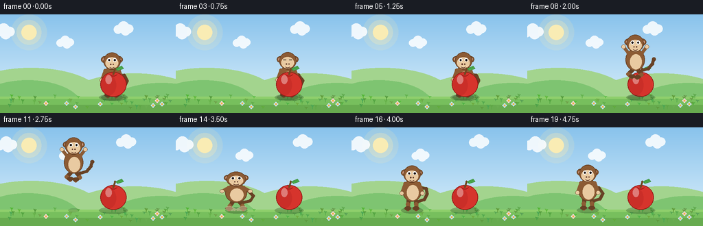
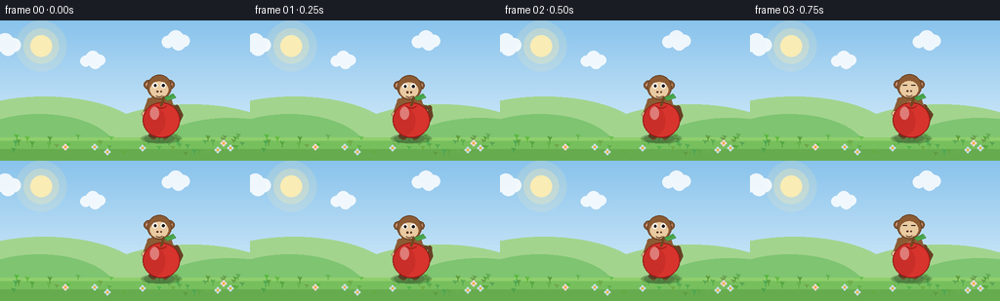

CODING AGENTS AS PIXEL WORLD MODELS
traex/Seed-2.1-Pro-0915 · dynamic_spatial_relationship_0053
点击播放 · 原生 RGB 像素
逐轮保存的候选
回放视频、检查图与代码变化。
每份候选均可单独播放。实际图片检查记录在下方工具轨迹中。
候选 01播放与检查图
点击播放 · 原生 RGB 像素


展开代码变化
--- 上一保存版本
+++ 本次保存版本
@@ -0,0 +1,311 @@
+"""Procedural t2v clip: a monkey behind an apple jumps to its left.
+
+20 frames, 256x144, 4 fps. Everything is drawn from geometry with PIL on a
+2x supersampled canvas, then downsampled with LANCZOS for smooth edges.
+"""
+import math
+
+import numpy as np
+from PIL import Image, ImageDraw
+
+import artifact_io
+
+W, H, N, FPS = 256, 144, 20, 4.0
+SS = 2
+SW, SH = W * SS, H * SS
+K = SS
+GROUND_Y = 120
+APPLE_X, APPLE_Y = 165, 102
+MONKEY_X0, MONKEY_X1 = 163, 88
+JUMP_H = 46.0
+
+# ---------------- palette ----------------
+SKY_TOP = (137, 195, 236)
+SKY_BOT = (224, 242, 252)
+SUN = (255, 238, 176)
+HILL_FAR = (163, 212, 142)
+HILL_NEAR = (126, 196, 113)
+GRASS = (119, 191, 93)
+GRASS_LIGHT = (143, 207, 108)
+GRASS_DARK = (103, 171, 79)
+SHADOW = (38, 66, 34)
+FUR = (140, 91, 52)
+FUR_D = (104, 65, 37)
+BELLY = (233, 202, 161)
+EAR_IN = (231, 177, 159)
+EYE_W = (255, 255, 255)
+PUPIL = (34, 25, 19)
+MOUTH = (92, 52, 36)
+APPLE = (214, 52, 44)
+APPLE_D = (176, 33, 30)
+APPLE_O = (146, 24, 21)
+STEM = (111, 72, 34)
+LEAF = (76, 171, 78)
+DUST = (214, 196, 158)
+
+rng = np.random.default_rng(7)
+
+
+# ---------------- low-level helpers ----------------
+def ell(draw, cx, cy, rx, ry, fill, outline=None, w=1):
+ draw.ellipse([cx - rx, cy - ry, cx + rx, cy + ry],
+ fill=fill, outline=outline, width=w)
+
+
+def soft_ellipse(base, cx, cy, rx, ry, color, alpha):
+ """Alpha-blended ellipse via a disposable overlay layer."""
+ layer = Image.new("RGBA", base.size, (0, 0, 0, 0))
+ ImageDraw.Draw(layer).ellipse(
+ [cx - rx, cy - ry, cx + rx, cy + ry],
+ fill=color + (int(alpha),))
+ return Image.alpha_composite(base, layer)
+
+
+def line(draw, p0, p1, width, fill):
+ width = max(1, int(round(width)))
+ draw.line([p0, p1], fill=fill, width=width)
+ ell(draw, p0[0], p0[1], width / 2, width / 2, fill)
+ ell(draw, p1[0], p1[1], width / 2, width / 2, fill)
+
+
+# ---------------- background (rendered once) ----------------
+def build_background():
+ grad = np.zeros((SH, SW, 4), dtype=np.uint8)
+ for c in range(3):
+ col = np.linspace(SKY_TOP[c], SKY_BOT[c], SH, dtype=np.float32)
+ grad[:, :, c] = col[:, None]
+ grad[:, :, 3] = 255
+ img = Image.fromarray(grad, "RGBA")
+
+ sx, sy = 42 * K, 26 * K
+ for r, a in ((26 * K, 40), (18 * K, 70), (11 * K, 230)):
+ img = soft_ellipse(img, sx, sy, r, r, SUN, a)
+
+ d = ImageDraw.Draw(img)
+ d.chord([-60 * K, 78 * K, 150 * K, 168 * K], 180, 360, fill=HILL_FAR)
+ d.chord([90 * K, 86 * K, 300 * K, 176 * K], 180, 360, fill=HILL_FAR)
+ d.chord([-40 * K, 96 * K, 120 * K, 176 * K], 180, 360, fill=HILL_NEAR)
+ d.chord([150 * K, 100 * K, 320 * K, 180 * K], 180, 360, fill=HILL_NEAR)
+
+ d.rectangle([0, GROUND_Y * K, SW, SH], fill=GRASS)
+ d.rectangle([0, GROUND_Y * K, SW, (GROUND_Y + 3) * K], fill=GRASS_LIGHT)
+ d.rectangle([0, 132 * K, SW, SH], fill=GRASS_DARK)
+
+ for _ in range(46):
+ x = int(rng.integers(4, W - 4)) * K
+ y = int(rng.integers(GROUND_Y + 2, H - 4)) * K
+ h = int(rng.integers(3, 7)) * K
+ col = (int(rng.integers(70, 110)), int(rng.integers(150, 190)),
+ int(rng.integers(55, 85)))
+ d.line([(x, y), (x, y - h)], fill=col, width=K)
+ d.line([(x, y - h // 2), (x - 2 * K, y - h)], fill=col, width=K)
+ d.line([(x, y - h // 2), (x + 2 * K, y - h)], fill=col, width=K)
+ for _ in range(7):
+ x = int(rng.integers(8, W - 8)) * K
+ y = int(rng.integers(GROUND_Y + 6, H - 8)) * K
+ petal = [(255, 214, 224), (255, 240, 170), (200, 226, 255)][int(rng.integers(0, 3))]
+ for ang in range(0, 360, 90):
+ px = x + int(2.2 * K * math.cos(math.radians(ang)))
+ py = y + int(2.2 * K * math.sin(math.radians(ang)))
+ ell(d, px, py, 1.4 * K, 1.4 * K, petal)
+ ell(d, x, y, 1.3 * K, 1.3 * K, (240, 180, 60))
+ return img
+
+
+BG = build_background()
+CLOUDS = [(30, 24, 1.0), (120, 40, 0.8), (205, 20, 0.9)]
+
+
+def draw_clouds(img, frame):
+ layer = Image.new("RGBA", img.size, (0, 0, 0, 0))
+ d = ImageDraw.Draw(layer)
+ for bx, by, s in CLOUDS:
+ x = (bx + frame * 0.35) % (W + 50) - 25
+ x, y = x * K, by * K
+ for dx, dy, r in [(-9, 2, 7), (0, -2, 9), (9, 1, 7), (3, 4, 8)]:
+ ell(d, x + dx * s * K, y + dy * s * K,
+ r * s * K, r * s * K, (255, 255, 255))
+ alpha = layer.split()[3].point(lambda v: int(v * 0.85))
+ layer.putalpha(alpha)
+ return Image.alpha_composite(img, layer)
+
+
+# ---------------- apple ----------------
+def draw_apple(img):
+ img = soft_ellipse(img, APPLE_X * K, (GROUND_Y + 1) * K,
+ 21 * K, 5 * K, SHADOW, 75)
+ d = ImageDraw.Draw(img)
+ ax, ay = APPLE_X * K, APPLE_Y * K
+ ell(d, ax, ay, 19 * K, 18 * K, APPLE, outline=APPLE_O, w=K)
+ img = soft_ellipse(img, ax - 7 * K, ay + 1 * K, 11 * K, 15 * K, APPLE_D, 80)
+ img = soft_ellipse(img, ax - 7 * K, ay - 7 * K, 4.5 * K, 6.5 * K, (255, 255, 255), 95)
+ d = ImageDraw.Draw(img)
+ line(d, (ax, ay - 15 * K), (ax + 2.5 * K, ay - 23 * K), 2.6 * K, STEM)
+ leaf = [(ax + 3 * K, ay - 23 * K), (ax + 12 * K, ay - 27 * K),
+ (ax + 15 * K, ay - 23 * K), (ax + 6 * K, ay - 20 * K)]
+ d.polygon(leaf, fill=LEAF, outline=(52, 130, 56))
+ d.line([(ax + 5 * K, ay - 22 * K), (ax + 12 * K, ay - 25 * K)],
+ fill=(52, 130, 56), width=max(1, K // 2))
+ d.arc([ax - 6 * K, ay - 20 * K, ax + 6 * K, ay - 12 * K],
+ 20, 160, fill=APPLE_O, width=K)
+ return img
+
+
+# ---------------- monkey ----------------
+def draw_monkey(img, cx, fy, pose, phase, blink=False, sx=1.0, sy=1.0):
+ air = max(0.0, (GROUND_Y - fy) / JUMP_H)
+ sr = (16 * (1 - 0.55 * air)) * K
+ img = soft_ellipse(img, cx * K, (GROUND_Y + 1) * K, sr,
+ max(2.0, 4.5 * (1 - 0.4 * air)) * K, SHADOW,
+ int(85 * (1 - 0.45 * air)))
+ d = ImageDraw.Draw(img)
+
+ def X(dx):
+ return (cx + dx * sx) * K
+
+ def Y(dy):
+ return (fy + dy * sy) * K
+
+ def RX(r):
+ return r * sx * K
+
+ def RY(r):
+ return r * sy * K
+
+ def LW(w):
+ return max(1, w * (sx + sy) * 0.5 * K)
+
+ sway = math.sin(phase * 1.3) * 3.0
+
+ if pose == "air":
+ tail = [(9, -12), (19, -15), (25, -22), (27, -29)]
+ elif pose == "crouch":
+ tail = [(9, -10), (20, -12), (25, -20), (21, -27 + sway)]
+ else:
+ tail = [(9, -12), (18, -15), (22, -23), (18 + sway, -31),
+ (11 + sway, -32)]
+ pts = [(X(dx), Y(dy)) for dx, dy in tail]
+ for p0, p1 in zip(pts[:-1], pts[1:]):
+ line(d, p0, p1, int(4.6 * K), FUR_D)
+ ell(d, pts[-1][0], pts[-1][1], 2.6 * K, 2.6 * K, FUR_D)
+
+ if pose == "air":
+ hips = [(-5, -12), (5, -12)]
+ knees = [(-10, -7), (9, -6)]
+ feet = [(-5, -3), (3, -2)]
+ elif pose == "crouch":
+ hips = [(-5, -9), (5, -9)]
+ knees = [(-9, -5), (9, -5)]
+ feet = [(-11, -1), (11, -1)]
+ elif pose == "land":
+ hips = [(-5, -12), (5, -12)]
+ knees = [(-8, -6), (8, -6)]
+ feet = [(-9, -1), (9, -1)]
+ else:
+ hips = [(-5, -14), (5, -14)]
+ knees = [(-6, -8), (6, -8)]
+ feet = [(-6, -1), (6, -1)]
+ for h0, k0, f0 in zip(hips, knees, feet):
+ line(d, (X(h0[0]), Y(h0[1])), (X(k0[0]), Y(k0[1])), LW(6), FUR_D)
+ line(d, (X(k0[0]), Y(k0[1])), (X(f0[0]), Y(f0[1])), LW(6), FUR)
+ ell(d, X(f0[0]), Y(f0[1] - 1), RX(4.6), RY(2.8), FUR_D)
+
+ ell(d, X(0), Y(-28), RX(14), RY(16), FUR, outline=FUR_D, w=K)
+ ell(d, X(1), Y(-25), RX(8.5), RY(11), BELLY)
+
+ if pose == "air":
+ arms = [((-10, -38), (-17, -47)), ((10, -38), (17, -47))]
+ elif pose == "crouch":
+ arms = [((-10, -36), (-17, -28)), ((10, -36), (17, -28))]
+ elif pose == "land":
+ arms = [((-10, -37), (-18, -31)), ((10, -37), (18, -31))]
+ else:
+ arms = [((-10, -38), (-15, -24)), ((10, -38), (15, -24))]
+ for sh, hand in arms:
+ line(d, (X(sh[0]), Y(sh[1])), (X(hand[0]), Y(hand[1])), LW(5), FUR)
+ ell(d, X(hand[0]), Y(hand[1]), RX(3), RY(3), BELLY,
+ outline=FUR_D, w=max(1, K // 2))
+
+ hx, hy = X(0), Y(-52)
+ for sgn in (-1, 1):
+ ell(d, X(sgn * 11), Y(-54), RX(4.6), RY(4.6), FUR, outline=FUR_D, w=K)
+ ell(d, X(sgn * 11), Y(-54), RX(2.4), RY(2.4), EAR_IN)
+ ell(d, hx, hy, RX(12.5), RY(12.5), FUR, outline=FUR_D, w=K)
+ ell(d, hx, Y(-49), RX(9.2), RY(8.2), BELLY)
+ ell(d, hx, Y(-45.5), RX(6.6), RY(4.6), BELLY)
+
+ if blink:
+ for sgn in (-1, 1):
+ d.line([(X(sgn * 4.2) - 2 * K, Y(-53.5)),
+ (X(sgn * 4.2) + 2 * K, Y(-53.5))],
+ fill=PUPIL, width=K)
+ else:
+ for sgn in (-1, 1):
+ ell(d, X(sgn * 4.2), Y(-53.5), RX(2.5), RY(2.7), EYE_W)
+ ell(d, X(sgn * 4.2), Y(-53.2), RX(1.3), RY(1.5), PUPIL)
+ for sgn in (-1, 1):
+ ell(d, X(sgn * 1.8), Y(-47), RX(0.8), RY(0.8), MOUTH)
+ d.arc([X(-3.6), Y(-46.5), X(3.6), Y(-41.5)], 20, 160,
+ fill=MOUTH, width=max(1, K))
+ return img
+
+
+def draw_dust(img, x, spread):
+ layer = Image.new("RGBA", img.size, (0, 0, 0, 0))
+ d = ImageDraw.Draw(layer)
+ for sgn in (-1, 1):
+ for j, off in enumerate((2, 5, 8)):
+ cxp = (x + sgn * off * spread) * K
+ cyp = (GROUND_Y - j) * K
+ r = (2.2 + j * 1.4) * K
+ ell(d, cxp, cyp, r, r * 0.7, DUST)
+ layer.putalpha(layer.split()[3].point(lambda v: int(v * 0.55)))
+ return Image.alpha_composite(img, layer)
+
+
+# ---------------- timeline ----------------
+def frame_state(i):
+ """Return (cx, fy, pose, sx, sy, phase, blink, behind, dust)."""
+ if i <= 5:
+ return (MONKEY_X0, GROUND_Y + math.sin(i * 1.2) * 0.8,
+ "stand", 1, 1, i, i == 3, True, None)
+ if i == 6:
+ return MONKEY_X0, GROUND_Y, "crouch", 1.12, 0.86, i, False, True, None
+ if i <= 13:
+ p = (i - 7) / 6.0
+ e = p * p * (3 - 2 * p)
+ cx = MONKEY_X0 + (MONKEY_X1 - MONKEY_X0) * e
+ fy = GROUND_Y - JUMP_H * 4 * p * (1 - p)
+ dust = "takeoff" if i == 7 else None
+ return cx, fy, "air", 1, 1, i, False, False, dust
+ if i == 14:
+ return MONKEY_X1, GROUND_Y, "land", 1.14, 0.86, i, False, False, "land"
+ return (MONKEY_X1, GROUND_Y + math.sin(i * 1.2) * 0.8,
+ "stand", 1, 1, i, i == 17, False, None)
+
+
+def render_frame(i):
+ img = draw_clouds(BG.copy(), i)
+ cx, fy, pose, sx, sy, phase, blink, behind, dust = frame_state(i)
+ if behind:
+ img = draw_monkey(img, cx, fy, pose, phase, blink, sx, sy)
+ img = draw_apple(img)
+ else:
+ img = draw_apple(img)
+ img = draw_monkey(img, cx, fy, pose, phase, blink, sx, sy)
+ if dust == "takeoff":
+ img = draw_dust(img, MONKEY_X0, 1.0)
+ elif dust == "land":
+ img = draw_dust(img, MONKEY_X1, 1.3)
+ return np.asarray(img.convert("RGB").resize((W, H), Image.Resampling.LANCZOS),
+ dtype=np.uint8)
+
+
+def main():
+ frames = np.stack([render_frame(i) for i in range(N)], axis=0)
+ artifact_io.save(frames, ".")
+ print(f"saved {frames.shape} frames")
+
+
+if __name__ == "__main__":
+ main()
可观测工具轨迹
实际执行的命令与返回图片。
命令 1exit 0
/bin/bash -lc 'cat prompt.txt; echo "===="; cat GENERATION_RULES.md; echo "===="; cat task_spec.json; echo "===="; ls -la'
命令 2exit 0
/bin/bash -lc 'cat artifact_io.py; echo "===="; cat player_template.html; echo "===="; ls .agents .codex .aws 2>/dev/null; python3 -c "import numpy, PIL; print(numpy.__version__, PIL.__version__)"'
命令 3exit 1
/bin/bash -lc 'cd . && python3 generate.py && ls -la && ls frames | head'
命令 4exit 0
/bin/bash -lc 'cd . && python3 generate.py && ls -la && ls frames'
保存候选 1 份；完成命令 4 次；可验证图片返回 0 张。原始 API 响应与完整日志保留在本地。